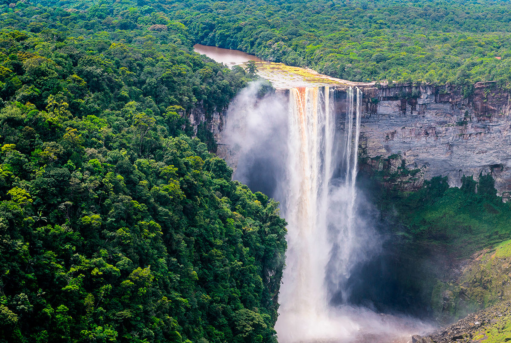

×

Guyana
Климат
Среднемесячная температура на побережье Атлантического океана колеблется от +27 С до +32 С круглый год. Дневная температура здесь редко выходит за рамки +22-31 С из-за влияния океана и северо-восточных пассатов. По мере продвижения на юг, в горные районы, температурный градиент становится более непостоянным - на горных склонах все зависит от высоты места над уровнем моря и солнечной экспозиции. Поэтому в некоторых районах Гвианского нагорья ночная температура может опускаться до +6 С, а днем воздух прогревается до +38-40 С.
Гайана - одна из самых влажных стран на планете. За год в горных районах выпадает в среднем до 3000 мм (нередки и 4000 мм), на побережье - до 2300 мм, а в южных саваннах - до 1600 мм осадков. При этом выделяются два дождливых сезона, связанных с приходом на территорию страны влажных воздушных масс с океана, - летний (с апреля-мая по июнь-август) и зимний (с ноября-декабря по январь). Высока и относительная влажность воздуха - 80% на побережье, до 70% в саванне и почти 100% - в лесистых горных районах центра страны. Для европейца такая влажность воздуха труднопереносима.
____